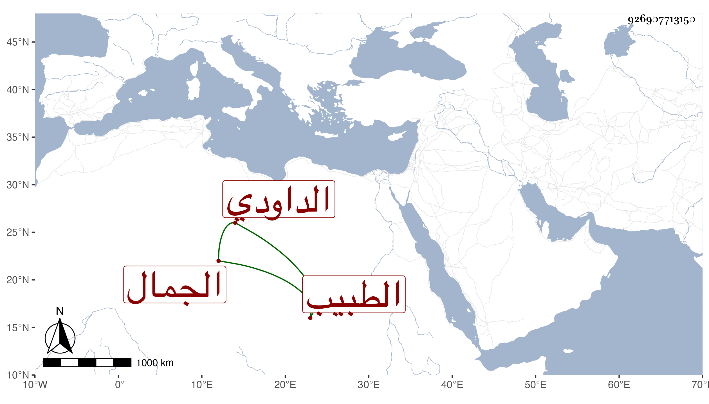

0902Sakhawi.DawLamic.ITO20230111-ara1.EIS1600.926907713150
Biography ID: 926907713150
1143
يوسف بن إبرهيم بن عبد الله بن داود بن أبي الفضل بن أبي المنجب ابن أبي الفتيان الجمال الداودي الطبيب . مات في أول رجب سنة ثلاث وثلاثين وقد زاد على التسعين . ذكره شيخنا أيضا وهو في عقود المقريزي وقال جمال الدين ابن الطبيب برهان الدين بن الطبيب تقي الدين الذي هو أول من أسلم من آبائه من أهل بيت يعترف لهم عامة اليهود بأنهم من ولد داود عليه السلام . ولد في نحو سنة ثلاثين وسبعمائة وبرع في الطب وعالج به دهرا طويلا وعاشر الأكابر بما فيه من فضيلة وجميل محاضرة وحسن معاشرة ، وجاز الثمانين وهو يغتسل بالماء البارد في الشتاء لصحة بدنه . ومات عن نحو مائة سنة ثم أنشد عنه حين قال له كيف أنتم :
| أسائل عن أخباركم فيسرني | سماعي الذي أرجوه فيكم وأطلب |
| إذا كنتم في نعمة وسلامة | فما أنا إلا فيهما أتقلب |
